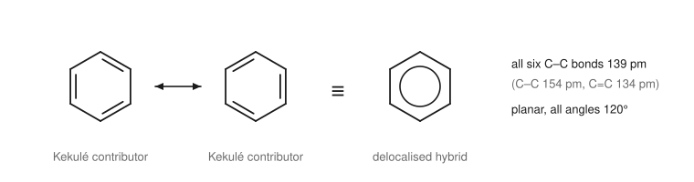
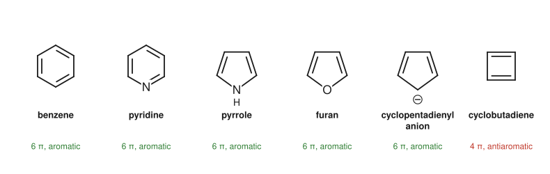
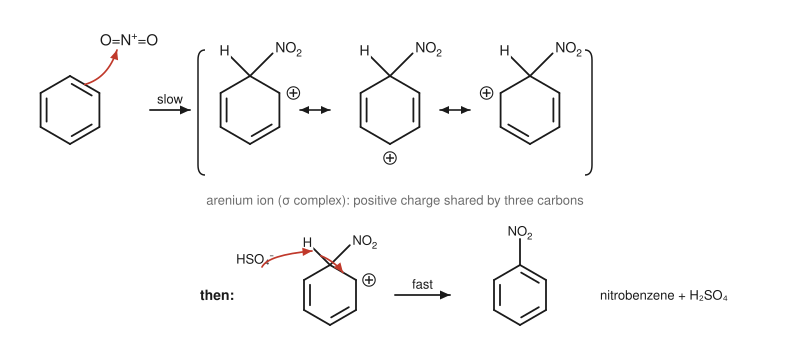
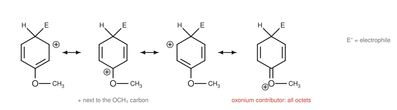

Chapter 8: Aromatic Compounds and Electrophilic Substitution¶
Benzene, aromaticity and the reactions that keep the ring intact
Benzene, C₆H₆, has three formal double bonds, yet it does not decolourise bromine water and it resists the addition reactions that alkenes undergo so readily. Instead, under forcing conditions, it swaps one of its hydrogens for another group and keeps its ring of six π electrons. This special stability, called aromaticity, makes benzene rings among the most common structural units in dyes, plastics, medicines and natural products. This chapter explains the structure of benzene, the rule that predicts which rings are aromatic, the mechanism of electrophilic aromatic substitution, and how groups already on the ring control the rate and position of further substitution.
Learning outcomes
By the end of this chapter you should be able to:
- describe the structure of benzene and explain its resonance energy;
- apply Hückel's rule to decide whether a ring is aromatic, including simple heterocycles and ions;
- write the general mechanism of electrophilic aromatic substitution and show how each electrophile is generated;
- give the reagents and products for halogenation, nitration, sulfonation and Friedel–Crafts alkylation and acylation, and the limitations of each;
- classify substituents as activating or deactivating and as ortho/para- or meta-directing, and explain why;
- plan the order of steps in the synthesis of a disubstituted benzene.
8.1 The structure of benzene¶
In 1865 August Kekulé proposed that benzene is a ring of six carbons with alternating single and double bonds. But his structure posed a puzzle. If the bonds alternated, 1,2-dibromobenzene should exist as two isomers, one with a single bond between the brominated carbons and one with a double bond. Only one is known. Kekulé suggested that the two arrangements interconverted rapidly. We now know the truth is subtler.
Modern measurements show that benzene is a regular, planar hexagon. All six C–C bonds have the same length, 139 pm, between the length of a C–C single bond (154 pm) and a C=C double bond (134 pm). All the bond angles are 120°, and every carbon is sp² hybridised. Each carbon has one p orbital perpendicular to the ring, and the six p orbitals overlap all the way round to form a continuous ring of π electron density above and below the plane.
In resonance language (Section 1.7), benzene is a hybrid of two equivalent Kekulé contributors. Neither exists on its own; the six π electrons are spread evenly over all six carbons. The hybrid is often drawn as a hexagon with a circle inside, though for following electrons in mechanisms you must use a Kekulé structure.

Resonance energy¶
How much does delocalisation stabilise benzene? Heats of hydrogenation provide the answer. Cyclohexene, with one double bond, releases about 120 kJ mol⁻¹ when hydrogenated to cyclohexane. A hypothetical "cyclohexatriene" with three isolated double bonds would be expected to release about three times as much, 360 kJ mol⁻¹. Benzene actually releases only about 208 kJ mol⁻¹. It is about 150 kJ mol⁻¹ more stable than expected. This extra stability is the resonance energy (or aromatic stabilisation energy) of benzene.
The resonance energy explains benzene's chemistry. Addition to the ring would destroy the delocalised system and lose this stabilisation. Substitution, in which a hydrogen is replaced and the ring of six π electrons is restored, keeps it. Benzene therefore undergoes substitution rather than addition.
8.2 Aromaticity and Hückel's rule¶
Benzene is the parent of a large family of aromatic compounds. A compound is aromatic if it meets all four of these conditions:
- It is cyclic.
- It is planar (or nearly so).
- It is fully conjugated: every atom of the ring has a p orbital that is part of the π system.
- It has 4n + 2 π electrons, where n is a whole number (0, 1, 2 ...): that is, 2, 6, 10, 14 ... π electrons. This is Hückel's rule.
A cyclic, planar, fully conjugated ring with 4n π electrons (4, 8 ...) is antiaromatic and is especially unstable. Cyclobutadiene, with four π electrons, is so unstable that it can be studied only at very low temperatures. Cyclooctatetraene, with eight, avoids antiaromaticity by bending into a tub shape; it is not planar and behaves as an ordinary polyene.

Counting π electrons in heterocycles and ions¶
Rings containing atoms other than carbon (heterocycles) and charged rings can be aromatic too. The skill is to count which electrons belong to the π system.
- Pyridine, C₅H₅N: a benzene ring with one CH replaced by N. The nitrogen contributes one electron to the π system, through its p orbital, just like each CH. Its lone pair sits in an sp² orbital in the plane of the ring, pointing outwards, and is not part of the π system. Six π electrons: aromatic. Because its lone pair is free, pyridine is a base (pKa of its conjugate acid 5.2).
- Pyrrole, C₄H₄NH: a five-membered ring with two C=C bonds (four π electrons) and an N–H. The nitrogen is sp² hybridised and its lone pair occupies the p orbital, completing a sextet. Six π electrons: aromatic. Because the lone pair is part of the aromatic system, pyrrole is hardly basic at all: protonating the nitrogen would destroy the aromaticity.
- Furan, C₄H₄O: like pyrrole, with oxygen contributing one of its two lone pairs to the π system. Aromatic.
- The cyclopentadienyl anion, C₅H₅⁻: removing a proton from the CH₂ of cyclopenta-1,3-diene leaves a lone pair in a p orbital, giving six π electrons over five carbons. The anion is aromatic, which is why cyclopentadiene is unusually acidic for a hydrocarbon (pKa about 16).
Fused rings can be aromatic as well. Naphthalene (two fused benzene rings, ten π electrons) and many larger polycyclic aromatic hydrocarbons follow the same pattern.
Example 8.1: Is it aromatic?
Decide whether each species is aromatic: (a) the cycloheptatrienyl (tropylium) cation, C₇H₇⁺; (b) cyclopentadiene, C₅H₆.
(a) A seven-membered ring with three C=C bonds and one carbocation carbon, which is sp² with an empty p orbital. Every ring atom has a p orbital, so the ring is fully conjugated; it is planar; and it has six π electrons (three π bonds). Six is 4n + 2 with n = 1: aromatic. The tropylium cation is unusually stable for a carbocation.
(b) Cyclopentadiene has a CH₂ group, an sp³ carbon with no p orbital. The ring is not fully conjugated: not aromatic.
8.3 Electrophilic aromatic substitution: the general mechanism¶
The π electrons of benzene make it a nucleophile, but a much weaker one than an alkene, because reaction costs aromatic stabilisation. Benzene therefore reacts only with strong electrophiles, usually generated with the help of a catalyst. The reaction is electrophilic aromatic substitution (EAS), and it always follows the same two-step mechanism.
- Attack on the electrophile (slow). A pair of π electrons from the ring forms a bond to the electrophile, E⁺. The carbon that is attacked becomes sp³, carrying both H and E, and the ring is left with a positive charge. The cation, called an arenium ion (or σ complex, or Wheland intermediate), is not aromatic, but it is stabilised by resonance: the charge is shared by the three carbons ortho and para to the site of attack. This step is rate-determining because it breaks the aromatic system.
- Loss of a proton (fast). A base removes the proton from the sp³ carbon. The C–H bonding pair moves back into the ring, restoring the aromatic sextet.
The net result is the replacement of H by E.

Key idea
Every electrophilic aromatic substitution has the same two steps: the ring attacks E⁺ to give an arenium ion, then loses H⁺. What differs from one reaction to the next is only how the electrophile is made. Learn the mechanism once and the five reactions below follow.
8.4 The main substitution reactions¶
Halogenation¶
Benzene does not react with bromine alone. A Lewis acid catalyst, such as iron(III) bromide (often formed in the flask from iron filings and bromine) or aluminium chloride, polarises the Br–Br bond by accepting a lone pair from one bromine. The other bromine becomes strongly electrophilic:
The ring attacks the outer bromine, and FeBr₄⁻ is released, which later takes back the proton to give HBr and regenerate the catalyst. The product is bromobenzene. Chlorination with Cl₂ and AlCl₃ or FeCl₃ works the same way.
Nitration¶
A mixture of concentrated nitric and sulfuric acids nitrates benzene. Sulfuric acid, the stronger acid, protonates nitric acid, which then loses water to give the nitronium ion, NO₂⁺, a powerful electrophile:
The product is nitrobenzene. Nitration is important mainly because the nitro group can be reduced to an amino group (with tin and hydrochloric acid, or hydrogen and a catalyst), giving aniline and its derivatives, the starting point for many dyes and drugs (Chapter 13). Nitration is strongly exothermic and must be controlled carefully; teaching practicals use small quantities of a deactivated substrate under supervision, with the temperature kept low.
Sulfonation¶
Benzene reacts with fuming sulfuric acid (sulfuric acid containing dissolved SO₃). The electrophile is sulfur trioxide, or its protonated form, HSO₃⁺. The product is benzenesulfonic acid, C₆H₅SO₃H, a strong acid. Unlike the other substitutions, sulfonation is reversible: heating a sulfonic acid in dilute aqueous acid removes the SO₃H group. Sulfonic acids are used to make detergents and sulfonamide drugs.
Friedel–Crafts alkylation¶
A haloalkane and aluminium chloride alkylate benzene. AlCl₃ takes the halide from the haloalkane, generating a carbocation (or a polarised complex that behaves like one), which is the electrophile:
This reaction makes a new carbon–carbon bond, but it has three serious limitations:
- Rearrangement. The carbocation can rearrange before it reacts. Benzene and 1-chloropropane give mainly isopropylbenzene (cumene), not propylbenzene, because the primary cation rearranges to the secondary one by a hydride shift.
- Polyalkylation. An alkyl group activates the ring (Section 8.5), so the product is more reactive than benzene and reacts again, giving mixtures of di- and trialkylbenzenes.
- Deactivated rings do not react. Rings carrying strongly electron-withdrawing groups such as –NO₂ are too unreactive. Rings carrying –NH₂ fail too, because the amine's lone pair binds to the AlCl₃ catalyst.
Friedel–Crafts acylation¶
An acyl chloride (RCOCl) and AlCl₃ generate an acylium ion, R–C≡O⁺, which is stabilised by resonance (R–C⁺=O ↔ R–C≡O⁺) and does not rearrange. The product is an aryl ketone:
The ketone group withdraws electrons and deactivates the ring, so the reaction stops cleanly after one substitution. Acylation therefore avoids both main problems of alkylation. If an alkyl chain is wanted, the ketone can afterwards be reduced to CH₂ (for example by the Clemmensen reduction with zinc amalgam and hydrochloric acid). Making propylbenzene without rearrangement is done in this way: acylate with propanoyl chloride, then reduce.
| Reaction | Reagents | Electrophile | Product from benzene |
|---|---|---|---|
| Bromination | Br₂, FeBr₃ | Br⁺ (as Br–Br–FeBr₃) | bromobenzene |
| Chlorination | Cl₂, AlCl₃ or FeCl₃ | Cl⁺ (as Cl–Cl–AlCl₃) | chlorobenzene |
| Nitration | conc. HNO₃, conc. H₂SO₄ | NO₂⁺ | nitrobenzene |
| Sulfonation | fuming H₂SO₄ (SO₃) | SO₃ or HSO₃⁺ | benzenesulfonic acid |
| Friedel–Crafts alkylation | R–Cl, AlCl₃ | R⁺ | alkylbenzene (may rearrange) |
| Friedel–Crafts acylation | RCOCl, AlCl₃ | RC≡O⁺ | aryl ketone |
Table 8.1. Electrophilic aromatic substitution reactions of benzene.
8.5 Substituent effects: reactivity and orientation¶
When the ring already carries a substituent, two questions arise. Does the substituent make the ring react faster or slower than benzene? And where does the new group go: ortho, meta or para? The answers come from the arenium ion.
Activating and deactivating groups¶
A substituent that donates electrons to the ring makes it more nucleophilic and stabilises the positively charged arenium ion. It activates the ring: methylbenzene (toluene) nitrates about 25 times faster than benzene, and phenol and aniline react extremely fast. A substituent that withdraws electrons makes the ring less nucleophilic and destabilises the arenium ion. It deactivates the ring: nitrobenzene reacts many orders of magnitude more slowly than benzene.
Groups donate or withdraw electrons in two ways:
- by the inductive effect, through the σ bond, according to electronegativity;
- by resonance, through the π system. A group with a lone pair on the atom attached to the ring (–OH, –OR, –NH₂, –halogen) can donate that pair into the ring. A group with a π bond to an electronegative atom (–NO₂, –C=O, –C≡N, –SO₃H) withdraws π electrons from the ring.
When the two effects conflict, resonance usually wins, with the important exception of the halogens.
Orientation: ortho/para versus meta¶
Consider attack at the three positions of methoxybenzene (anisole). For ortho or para attack, one of the three resonance contributors of the arenium ion places the positive charge on the ring carbon that carries the OCH₃ group. The oxygen lone pair can then form a C=O⁺ π bond, giving a fourth contributor in which every atom has an octet. That extra contributor makes the ortho and para arenium ions much more stable. For meta attack the positive charge never reaches the carbon bearing the OCH₃ group, so no such contributor is possible.

The same reasoning, applied to each kind of group, gives three classes:
- Activating, ortho/para-directing. Groups that donate electrons: –NH₂, –NHR, –NR₂, –OH, –OR, –NHCOR (strongly or moderately, by resonance), and alkyl groups (weakly, by induction and hyperconjugation). Each stabilises the ortho and para arenium ions most.
- Deactivating, ortho/para-directing. The halogens. Their strong inductive withdrawal makes the ring less reactive overall, but their lone pairs can still stabilise the ortho and para arenium ions by resonance. Chlorobenzene reacts more slowly than benzene but gives mainly ortho and para products.
- Deactivating, meta-directing. Groups whose atom attached to the ring is δ+ or carries a positive charge: –NO₂, –CN, –SO₃H, –CHO, –COR, –COOH, –COOR, –CF₃, –NR₃⁺. For ortho or para attack, one contributor puts the positive charge right next to this electron-poor group, which is especially bad. Meta attack avoids that contributor, so meta is the least disfavoured position.
| Class | Groups | Effect on rate | Directs to |
|---|---|---|---|
| strongly activating | –NH₂, –NHR, –NR₂, –OH, –O⁻ | much faster | ortho, para |
| moderately activating | –OR, –NHCOR | faster | ortho, para |
| weakly activating | –R (alkyl), –C₆H₅ | slightly faster | ortho, para |
| weakly deactivating | –F, –Cl, –Br, –I | slower | ortho, para |
| strongly deactivating | –NO₂, –CN, –SO₃H, –CHO, –COR, –COOH, –COOR, –CF₃, –NR₃⁺ | much slower | meta |
Table 8.2. Effects of substituents on electrophilic aromatic substitution.
Key idea
A quick rule: if the atom attached to the ring has a lone pair (or is an alkyl carbon), the group directs ortho/para. If it is δ+, bonded to a more electronegative atom by a multiple bond, or positively charged, the group directs meta. All meta directors deactivate; all activators direct ortho/para; the halogens are the exception that deactivate yet direct ortho/para.
Of the two ortho/para products, the para isomer often predominates, especially for bulky groups, because the ortho positions are more crowded. Nitration of toluene gives roughly 60% ortho, 40% para and only a few per cent meta; nitration of tert-butylbenzene gives mainly para.
Caution: very reactive rings
Phenol and aniline are so strongly activated that they react with bromine water at room temperature, without a catalyst, and are brominated at every free ortho and para position: phenol gives 2,4,6-tribromophenol as a white precipitate. To get a single substitution on aniline, the amino group is first converted into an amide (–NHCOCH₃), a milder activator, and changed back afterwards.
8.6 Planning a synthesis¶
Because substituents direct further substitution, the order of reactions matters.
Example 8.2: Ordering the steps
Make (a) 1-bromo-3-nitrobenzene and (b) 1-bromo-4-nitrobenzene from benzene.
(a) The two groups are meta to each other. The nitro group is a meta director; bromine is an ortho/para director. So nitrate first (HNO₃, H₂SO₄), then brominate (Br₂, FeBr₃): the nitro group sends the bromine to the meta position. The deactivated ring brominates slowly, but it does react.
(b) The groups are para. Brominate first, then nitrate: bromine directs the incoming nitro group ortho and para. The para isomer is separated from the ortho by crystallisation (the para isomer, being more symmetrical, has a higher melting point and lower solubility).
Example 8.3: Where does the third group go?
Predict the main product of nitrating 4-methylphenol (p-cresol).
Both groups are ortho/para directors, and the para position of each is occupied by the other. The OH group is a much stronger activator than CH₃, so it controls the orientation: the nitro group enters ortho to OH. Product: 4-methyl-2-nitrophenol. When groups disagree, the stronger activator wins.
Reactions of side chains¶
Groups attached to the ring can also be changed. The carbon directly attached to a benzene ring is the benzylic position. Benzylic C–H bonds are weak, because breaking them gives a resonance-stabilised benzylic radical. Consequently:
- Oxidation. Hot, alkaline potassium manganate(VII) oxidises any alkyl side chain with at least one benzylic hydrogen all the way to –COOH, whatever its length. Methylbenzene gives benzoic acid. This changes an ortho/para-directing alkyl group into a meta-directing carboxyl group, which can be useful in synthesis.
- Radical bromination occurs selectively at the benzylic position, for example with N-bromosuccinimide (NBS) and light.
- Reduction of a nitro group gives an amino group, turning a strong meta director and deactivator into a strong ortho/para director and activator.
8.7 Summary¶
Summary
- Benzene is a planar regular hexagon with six equal C–C bonds (139 pm) and six delocalised π electrons; its resonance energy is about 150 kJ mol⁻¹.
- Hückel's rule: a cyclic, planar, fully conjugated ring with 4n + 2 π electrons is aromatic; with 4n it is antiaromatic.
- In pyridine the N lone pair is outside the π system (basic); in pyrrole it is part of it (not basic).
- EAS: the ring attacks E⁺ to give a resonance-stabilised arenium ion (slow), which loses H⁺ (fast).
- Electrophiles: Br⁺/Cl⁺ from X₂ and a Lewis acid; NO₂⁺ from HNO₃/H₂SO₄; SO₃ from fuming H₂SO₄; R⁺ and RCO⁺ from RCl or RCOCl with AlCl₃.
- Friedel–Crafts alkylation suffers rearrangement and polyalkylation; acylation does not.
- Electron donors activate and direct ortho/para; electron-withdrawing groups deactivate and direct meta; halogens deactivate but direct ortho/para.
- Plan syntheses so that each group is introduced when the existing groups direct it to the right place.
8.8 Exercises¶
Exercise 1
Use heats of hydrogenation to explain why benzene is said to have a resonance energy of about 150 kJ mol⁻¹. Why does this make benzene prefer substitution to addition?
Answer
Cyclohexene releases about 120 kJ mol⁻¹ on hydrogenation; three isolated double bonds would release about 360 kJ mol⁻¹. Benzene releases only about 208 kJ mol⁻¹, so it is about 150 kJ mol⁻¹ lower in energy than a ring with three isolated double bonds. Addition would destroy the aromatic π system and lose this stabilisation, while substitution restores it in the final step, so substitution is thermodynamically and kinetically preferred.
Exercise 2
Which are aromatic? (a) cyclopropenyl cation, C₃H₃⁺; (b) cyclooctatetraene; (c) thiophene, C₄H₄S; (d) cyclohepta-1,3,5-triene, C₇H₈.
Answer
(a) Aromatic: planar, fully conjugated (the cationic carbon has an empty p orbital) and two π electrons (n = 0). (b) Not aromatic: eight π electrons would make it antiaromatic if planar, so it adopts a non-planar tub shape and behaves as a polyene. (c) Aromatic: like furan, sulfur contributes one lone pair, giving six π electrons. (d) Not aromatic: the CH₂ carbon is sp³, so the ring is not fully conjugated.
Exercise 3
Write the mechanism of the bromination of benzene with Br₂ and FeBr₃, showing how the catalyst is regenerated.
Answer
(1) A lone pair of Br₂ coordinates to FeBr₃, giving Br–Br⁺–FeBr₃⁻ and making the outer bromine electrophilic. (2) The π electrons of the ring attack the outer bromine; the Br–Br bond breaks, releasing FeBr₄⁻, and an arenium ion forms with the charge delocalised over the ortho and para carbons. (3) FeBr₄⁻ acts as a base: a bromide removes the proton from the sp³ carbon, the C–H bonding pair restores the aromatic ring, and HBr and FeBr₃ are formed. The catalyst is regenerated.
Exercise 4
Benzene reacts with 1-chlorobutane and AlCl₃. Predict the main product and explain. How could butylbenzene itself be made?
Answer
The primary carbocation (or its complex with AlCl₃) rearranges by a hydride shift to the more stable secondary cation, CH₃CH₂C⁺HCH₃. The main product is therefore (butan-2-yl)benzene, sec-butylbenzene, together with some polyalkylated material. To make butylbenzene, use Friedel–Crafts acylation with butanoyl chloride and AlCl₃ (no rearrangement), giving 1-phenylbutan-1-one, then reduce the C=O to CH₂.
Exercise 5
Predict the main mononitration product(s) of: (a) methoxybenzene; (b) benzoic acid; (c) chlorobenzene; (d) nitrobenzene. Say whether each reacts faster or slower than benzene.
Answer
(a) 2- and 4-nitromethoxybenzene (ortho and para), mainly para; faster. (b) 3-nitrobenzoic acid (meta); slower. (c) 1-chloro-2-nitro- and 1-chloro-4-nitrobenzene (ortho and para); slower. (d) 1,3-dinitrobenzene (meta); much slower, needing more forcing conditions.
Exercise 6
Explain, by drawing the arenium ions, why the nitro group directs incoming electrophiles to the meta position.
Answer
For ortho or para attack, one of the three contributors of the arenium ion places the positive charge on the ring carbon bonded to the nitro group. The nitrogen of the nitro group already carries a formal positive charge, so this contributor puts two positive charges on adjacent atoms and is very unfavourable; the ortho and para arenium ions are strongly destabilised. In meta attack, the positive charge is placed only on carbons not bonded to the nitro group, so this bad contributor never arises. All three ions are destabilised relative to benzene (hence deactivation), but the meta ion least, so meta substitution is fastest.
Exercise 7
Starting from benzene, give a sequence of reactions to make 3-nitrobenzoic acid. Would the order of steps matter?
Answer
Friedel–Crafts alkylation with chloromethane and AlCl₃ gives methylbenzene. Oxidation with hot alkaline KMnO₄ (then acidification) gives benzoic acid. Nitration then puts the nitro group meta to the meta-directing COOH group: 3-nitrobenzoic acid. The order matters: nitrating methylbenzene first would put the nitro group ortho or para to the methyl, and Friedel–Crafts alkylation of nitrobenzene fails because the ring is too deactivated.
8.9 Quiz¶
Check your understanding of aromatic chemistry
Exercise 1
How many π electrons does an aromatic ring have according to Hückel's rule?
- 4n
- 4n + 2
- 2n
- any even number
Answer
4n + 2
Exercise 2
Which compound is NOT aromatic?
- pyridine
- furan
- cyclohexa-1,3-diene
- pyrrole
Answer
cyclohexa-1,3-diene
Exercise 3
The electrophile in the nitration of benzene is
- NO₂⁻
- NO₂⁺
- HNO₃
- NO⁺
Answer
NO₂⁺
Exercise 4
Which group is deactivating but ortho/para-directing?
- -OH
- -CH₃
- -Cl
- -NO₂
Answer
-Cl
Exercise 5
Friedel-Crafts acylation is preferred over alkylation because acylation
- is faster
- does not suffer rearrangement or polysubstitution
- needs no catalyst
- works on nitrobenzene
Answer
does not suffer rearrangement or polysubstitution
Exercise 6
Nitration of benzoic acid gives mainly
- 2-nitrobenzoic acid
- 3-nitrobenzoic acid
- 4-nitrobenzoic acid
- nitrobenzene
Answer
3-nitrobenzoic acid
Exercise 7
Match each reagent pair to the group it introduces into benzene.
| A | B |
|---|---|
| Br₂, FeBr₃ | -COCH₃ |
| conc. HNO₃, conc. H₂SO₄ | -SO₃H |
| CH₃COCl, AlCl₃ | -Br |
| fuming H₂SO₄ | -NO₂ |
Answer
Br₂, FeBr₃ — -Br; conc. HNO₃, conc. H₂SO₄ — -NO₂; CH₃COCl, AlCl₃ — -COCH₃; fuming H₂SO₄ — -SO₃H